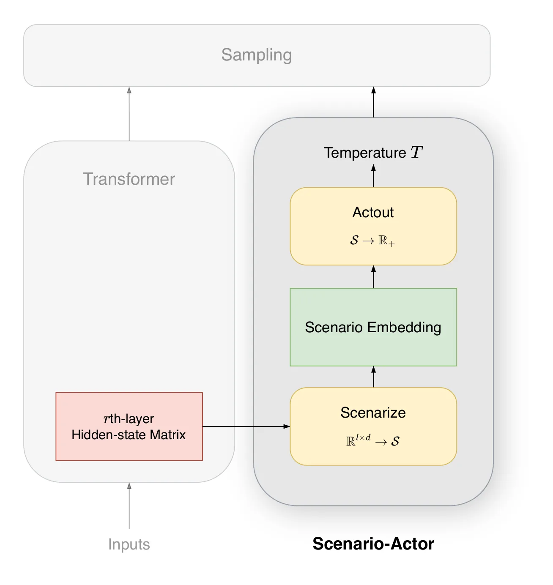
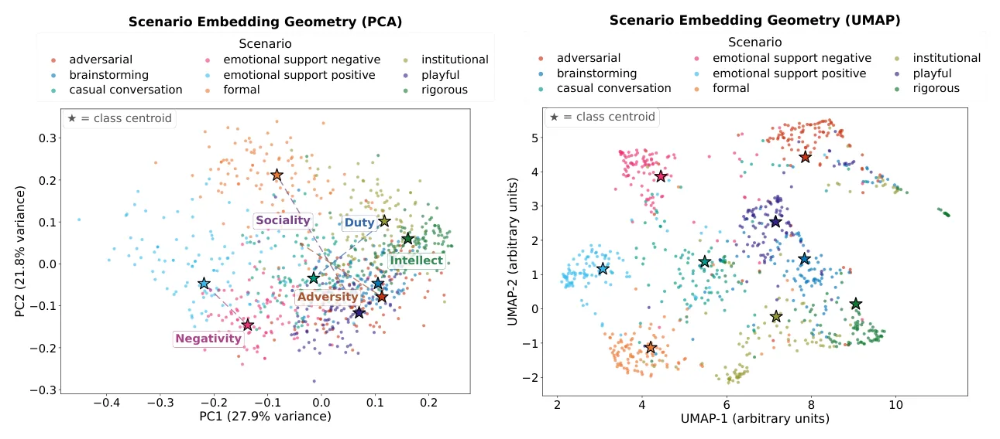
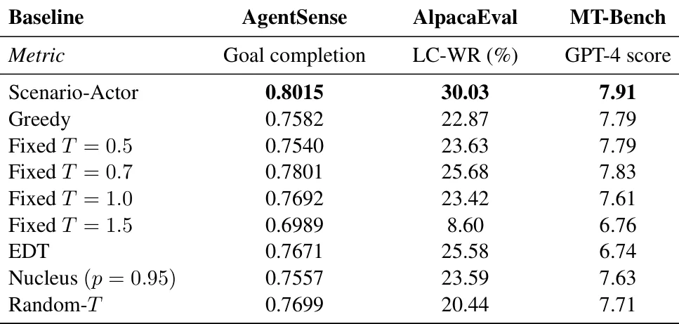
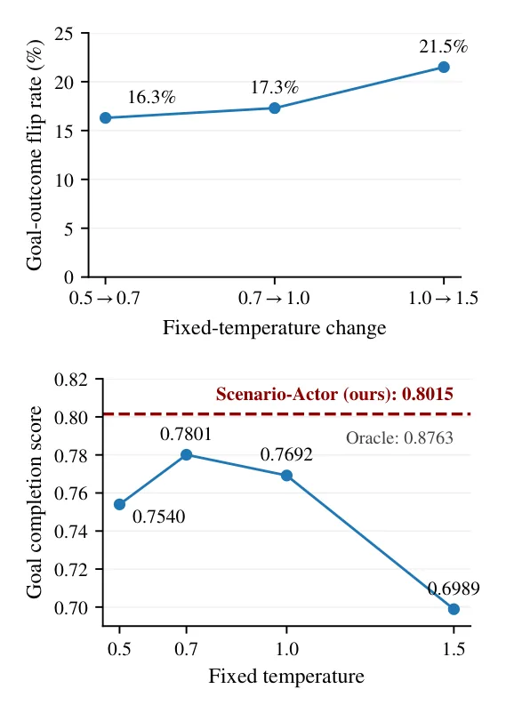

O problema da temperatura fixa
Grandes modelos de linguagem (LLMs) geram texto amostrando de uma distribuição de probabilidade condicional para o próximo token. Um dos hiperparâmetros mais simples, porém cruciais, nesse processo é a temperatura de amostragem. Ela controla a nitidez da distribuição de probabilidade: temperaturas mais baixas tornam a saída mais determinista e rigorosa, enquanto temperaturas mais altas aumentam a criatividade e a variabilidade. Sistemas atuais geralmente definem essa temperatura de forma global e fixa, ou a adaptam com base na incerteza preditiva do modelo, tratando a geração como uma propriedade puramente do estado preditivo do modelo.
No entanto, a geração de linguagem situada socialmente expõe uma fonte de variação diferente: a interação em si. Um prompt carrega não apenas semântica, mas implica um cenário comunicativo. Uma conversa acadêmica exige rigor, enquanto um bate-papo casual pede informalidade. A temperatura ideal é circunstancial. Experimentos controlados mostraram que alterar a temperatura entre valores médios (como de 0.5 para 0.7) pode inverter o resultado do objetivo em até 17% das interações sociais. Além disso, não existe uma única configuração de temperatura globalmente superior; o que funciona para um cenário pode falhar em outro.
A proposta: Scenario-Actor
Para abordar essa limitação, os autores propõem o Scenario-Actor, um framework para seleção de temperatura adaptativa ao cenário. A premissa é que o prompt fornece evidências suficientes para inferir um cenário comunicativo. O framework extrai estruturas relevantes do cenário a partir dos estados ocultos (hidden states) do Transformer e determina a temperatura com base em um embedding de cenário. Este embedding é uma representação geométrica estruturada do ambiente comunicativo.
O método se apoia no modelo DIAMONDS, da psicologia situacional, que descreve características da situação que variam o comportamento humano. Os autores constroem eixos de cenário a partir de nove rótulos pré-definidos, condensados em cinco eixos principais: Dever (Duty), Intelecto (Intellect), Adversidade (Adversity), Negatividade (Negativity) e Sociabilidade (Sociality). Cada prompt é representado por um embedding de cenário nesse espaço multidimensional, e uma função 'Actout' mapeia a geometria desse vetor para uma temperatura de amostragem específica para o prompt.

Como funciona o mecanismo
O processo começa com a extração de uma matriz de representação da camada r do Transformer. Esta representação é projetada em um espaço de cenário de dimensão m. Cada prompt resulta em um embedding de cenário. A chave aqui é a interpretabilidade geométrica: o espaço de cenário é estruturado em torno dos eixos DIAMONDS. Isso permite que o modelo não apenas preveja o próximo token, mas também 'leia o ambiente' antes de gerar.
A função Actout é responsável por converter a posição do embedding no espaço de cenário para um valor de temperatura escalar. A lógica subjacente é que cenários caracterizados por alta 'Sociabilidade' ou baixa 'Dever' podem exigir temperaturas mais altas para gerar respostas mais fluidas e abertas, enquanto cenários de 'Dever' ou 'Adversidade' podem exigir temperaturas mais baixas para precisão e rigor. O modelo aprende essa mapeamento durante o treinamento, otimizando a conclusão de objetivos em interações sociais.

Resultados empíricos
Avaliações foram realizadas no Llama-3.1-8B-Instruct. Os resultados mostram que o Scenario-Actor alcança forte desempenho na conclusão de objetivos em cenários sociais interativos (benchmark AgentSense), melhorias significativas no seguimento de instruções abertas (AlpacaEval) e desempenho competitivo em diálogos multi-turno (MT-Bench) comparado a múltiplas estratégias de decodificação, incluindo amostragem nucleus (Nucleus Sampling) e EDT (Expected Token Duration).
No benchmark AgentSense, o Scenario-Actor superou a temperatura fixa de 0.5 em 4.75 pontos percentuais e a amostragem nucleus em 4.58 pontos percentuais, com significância estatística. No AlpacaEval, a melhoria foi ainda mais pronunciada, com ganhos de até 21.43 pontos percentuais em relação à temperatura fixa de 1.5, embora a comparação direta com temperaturas fixas altas possa ser enganosa devido à natureza diferente dos benchmarks. O importante é que o método se adapta, evitando tanto a rigidez excessiva quanto a alucinação criativa.

Limitações e escopo
Apesar dos resultados promissores, o paper reconhece limitações importantes. Primeiro, o cenário de LLMs é mais estreito que o cenário humano. Os modelos recebem apenas sequências textuais, ignorando pistas não linguísticas (tom de voz, linguagem corporal) presentes em interações humanas reais. A inferência de cenário baseada apenas no contexto linguístico é insuficiente para capturar a totalidade da interação social.
Segundo, o framework é comprometido com prompts orientados a tarefas. O Scenario-Actor foi projetado para configurações com pistas de cenário ricas, como conversas multi-turno. No entanto, muitos prompts são diretos e utilitários (escrever código, resolver matemática). Esses prompts contêm poucas evidências de um cenário social, tornando a inferência de cenário quase impossível. Para esses casos, um seletor independente pode rotear a entrada para uma política de decodificação padrão, separada do framework Scenario-Actor.

Conclusão
O Scenario-Actor representa um passo em direção a modelos de linguagem socialmente adaptativos. Ao mapear estados ocultos para um embedding de cenário estruturado e derivar a temperatura a partir de sua geometria, o framework permite que os modelos reconheçam o ambiente comunicativo. À medida que os LLMs se integram à sociedade humana através de agentes multimodais e sistemas encarnados, a capacidade de reconhecer as situações em que estão inseridos se tornará cada vez mais importante. Este trabalho sugere que a adaptação dinâmica da geração de texto ao contexto social não é apenas possível, mas benéfica para a qualidade da interação.
O que fica
- A temperatura de amostragem não é um hiperparâmetro global fixo; ela deve variar conforme o cenário social inferido do prompt.
- O Scenario-Actor mapeia estados ocultos do modelo para um espaço geométrico estruturado (eixo DIAMONDS) para derivar a temperatura.
- O método supera baselines de temperatura fixa e nucleus sampling em benchmarks de interação social e instrução aberta.
- A inferência de cenário é limitada a contextos textuais ricos, falhando em prompts utilitários ou de tarefas puramente lógicas.
Paper original: Read the Room Before Your Model Generates
Comentários
Nenhum comentário ainda. Seja o primeiro.